7 Continuous Prediction with Regression Trees
7.1 Big Idea
Predicting a continuous response is one of two big areas of machine learning (the other being predicting a categorical response – e.g., classification). Like decision trees, regression trees make rules that allow for prediction. These rules come from partitioning the data over and over to get the purest splits possible. It’s a computationally intensive method but it is effective when responses are non-linear and very intuitive. Importantly the tree that is produced can help shed light on processes or mechanisms that create the patterns.
7.2 Packages
## ── Attaching core tidyverse packages ──────────────────────── tidyverse 2.0.0 ──
## ✔ dplyr 1.2.0 ✔ readr 2.2.0
## ✔ forcats 1.0.1 ✔ stringr 1.6.0
## ✔ ggplot2 4.0.2 ✔ tibble 3.3.1
## ✔ lubridate 1.9.5 ✔ tidyr 1.3.2
## ✔ purrr 1.2.1
## ── Conflicts ────────────────────────────────────────── tidyverse_conflicts() ──
## ✖ dplyr::filter() masks stats::filter()
## ✖ dplyr::lag() masks stats::lag()
## ℹ Use the conflicted package (<http://conflicted.r-lib.org/>) to force all conflicts to become errors## Loading required package: lattice
##
## Attaching package: 'caret'
##
## The following object is masked from 'package:purrr':
##
## liftlibrary(rpart)
library(Cubist)
library(visNetwork)
library(sparkline) # visNetwork might need this loadedAs usual we’ll want tidyverse(Wickham 2023) and caret(Kuhn 2024) for cross validation. The main function for the regression tree we will be using is in C50(Therneau and Atkinson 2025), the model tree is in Cubist(Kuhn and Quinlan 2026). And some fun visualization in visNetwork(Almende B.V. and Contributors and Thieurmel 2025) and sparkline(Vaidyanathan, Russell, and Watts 2016).
7.3 Reading
Chapter 6: Forecasting Numeric Data – Classification Using Decision Trees and Rules in Machine Learning with R: Expert techniques for predictive modeling, 3rd Edition. Link on Canvas.
The first 2/3 of the chapter is a review of regression. You can skim that if you want to but it should all be review (albeit, a review laid out in a really nice way including stuff on using matrices that you might not have appreciated before). For this module focus on pages 200-216 which covers regression trees and model trees. We are going to cover the rpart algorithm in this module and explore the cubist algorithm in a little less depth. Like with classification trees, there are roughly a zillion ways to make regression trees and I want you to get the idea of how they are applied.
Chapter 10: Decision Trees!!! in The StatQuest Illustrated Guide to Machine Learning!!! Focus on part two.
7.4 Growing and Pruning
Just like with classification trees, there are two jobs that take place when making a regression tree. First, you grow the tree by partitioning the data according to some splitting algorithm. That’s what we will focus on here. The “problem” with these algorithms is that they are very effective at partitioning data and thus prone to overfitting. That is, they can accurately model a training data set but make so many fine splits that the data aren’t generalizable to new or withheld data. So the trees have to be pruned by some set of rules to make them more generally applicable. Just like a garden or an orchard, you cultivate growth and then have to weed and prune to get what you want.
We will focus mostly on the growing of the trees in this module.
7.5 Weird Tree Terms: Model Trees Use Regression but Regression Trees Don’t
We are going to look at both regression trees and model trees in this module and the reading is in a chapter with “regression” in the title. And yet…regression trees (e.g., rpart) don’t really do regression in the sense of OLS regression described in the first part of the chapter. Weird. We find that kind of regression when we build model trees (e.g., cubist). It’s unfortunate that the terms are thrown about like that but that’s the way it is. The reading covers this on page 200 and is worth paying attention to.
7.6 Toy Example: Splitting Continuous Variables
Recall how the classification tree algorithm we looked at in detail last module used entropy to measure increases in homogeneity in a class. This doesn’t work the same way for a continuous variable (entropy is undefined) so we need a different way of finding increases homogeneity. There are a few different ways of doing this with continuous data and I’ll explain how we can do this by minimizing the total sum of squared residuals (this is where the “regression” comes in as that’s a term and the sum of squares is concept you’ll remember from OLS).
Here are some data.
x <- c(seq(-10,-5,by=0.5),
seq(-4.8,0,by=0.2),
seq(0.2,5,by=0.2),
seq(5.5,10,by=0.5))
n <- length(x)
y <- 1/(1+exp(-x)) + runif(n,-0.1,0.1)
ggplot() +
geom_point(aes(x=x,y=y),size=3)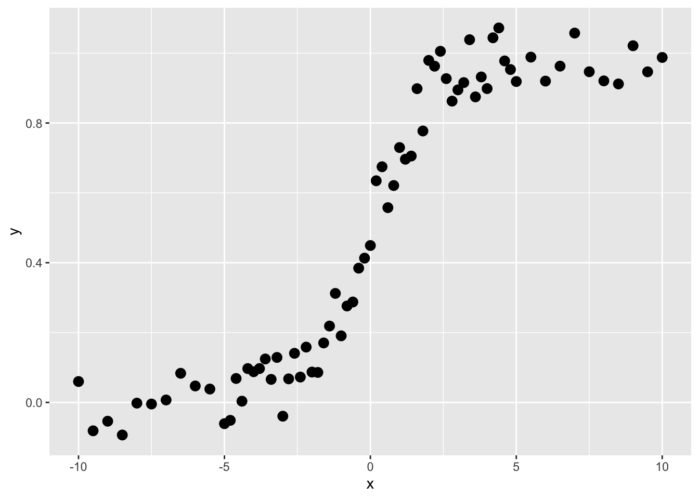
These are not data that would do well with linear regression, right? Imagine fitting a straight line. But this is the kind of thing that regression trees are very good at.
Like all the modeling we’ve been doing in this class, we are trying to predict \(y\). So here, our goal is to find a rule by which we can find thresholds of \(x\) that will predict values of \(y\). We call those predicted values \(\hat y\). The function above is a sigmoid and looking at it you’d be able to make the split by eye (the first split is on \(x=0\) right?). Here is how we do it in a regression tree:
Ask the computer to divide the \(x\) data into as many sequential subsets as it can with at least four adjacent points. This number can vary and is up to the user – but four is fine for our example.
Get the average values of \(y\) for each subset. Call this \(\bar y\).
Get the residual values of \(y\) as \(\sum_i^n (y_i - \bar y)^2\) for each of the two subsets. Note that this is the sum of squared differences of the kind that we find in OLS.
Choose the value of \(x\) that minimizes the residuals of \(y\).
Predict \(y\) so that \(\hat y = \bar y\) for each split.
Let’s implement this. Let’s find the first split.
7.6.1 Iteration 1
x_left <- x[1:4]
x_right <- x[5:n]
y_left <- y[1:4]
y_right <- y[5:n]
split4plotting <- (max(x_left) + min(x_right)) / 2
p1 <- ggplot() +
geom_rect(aes(xmin=-Inf,xmax=split4plotting,
ymin=-Inf,ymax=Inf),
fill="lightgreen", alpha=0.5) +
geom_rect(aes(xmin=split4plotting,xmax=Inf,
ymin=-Inf,ymax=Inf),
fill="lightblue", alpha=0.5) +
geom_point(aes(x=x_left,y=y_left),col="darkgreen",size=3) +
geom_point(aes(x=x_right,y=y_right),col="darkblue",size=3) +
labs(x="x",y="y") +
scale_y_continuous(expand = c(0,0.1)) +
coord_cartesian(ylim=c(0,1),clip = "off")
p1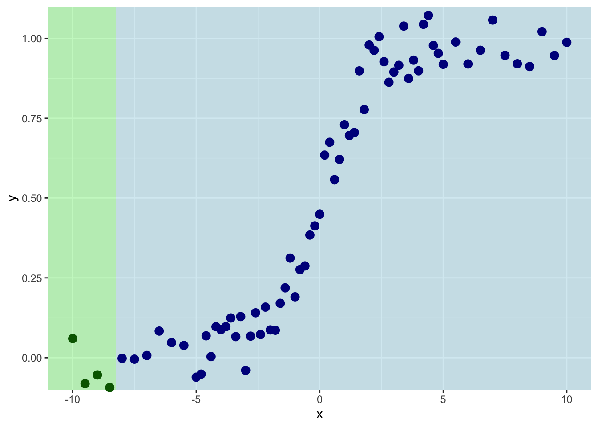
So we are splitting on the first four values of \(x\). Th mean value of \(y\) for the left side of the plot is:
## [1] -0.04212831And for the right it is:
## [1] 0.5256663And the sum of the residuals is:
resids_left <- sum((y_left - ybar_left)^2)
resids_right <- sum((y_right - ybar_right)^2)
resids_left## [1] 0.01467954## [1] 10.97691This shows you what the means and the residuals look like for this first split. The total of sum-of-squared residuals for the left is essentially zero (0.0146795) but for the right it is pretty big (10.977).
p1 + geom_segment(aes(y=ybar_left,yend=ybar_left,
x=min(x_left),xend=max(x_left)),
color="darkgreen", size=1) +
geom_segment(aes(y=ybar_right,yend=ybar_right,
x=min(x_right),xend=max(x_right)),
color="darkblue", size=1) +
geom_segment(aes(y=ybar_left,yend=y_left,
x=x_left,xend=x_left),
color="darkgreen", linetype="dashed") +
geom_segment(aes(y=ybar_right,yend=y_right,
x=x_right,xend=x_right),
color="darkblue", linetype="dashed") +
geom_text(mapping = aes(x=mean(x_left),y=1,
label=paste("SSD=",
round(resids_left,3),
sep="")),
color="darkgreen",vjust=-1) +
geom_text(mapping = aes(x=mean(x_right),y=1,
label=paste("SSD=",
round(resids_right,3),
sep="")),
color="darkblue",vjust=-1) +
labs(subtitle = paste("Total SSD=",
round(resids_left+resids_right,3),
sep=""))## Warning: Using `size` aesthetic for lines was deprecated in ggplot2 3.4.0.
## ℹ Please use `linewidth` instead.
## This warning is displayed once per session.
## Call `lifecycle::last_lifecycle_warnings()` to see where this warning was
## generated.7.6.2 Iteration 2
Let’s increment by one to try the next split with the first five values of \(x\) and \(y\).
x_left <- x[1:5]
x_right <- x[6:n]
y_left <- y[1:5]
y_right <- y[6:n]
split4plotting <- (max(x_left) + min(x_right)) / 2
ybar_left <- mean(y_left)
ybar_right <- mean(y_right)
resids_left <- sum((y_left - ybar_left)^2)
resids_right <- sum((y_right - ybar_right)^2)
p2 <- ggplot() +
geom_rect(aes(xmin=-Inf,xmax=split4plotting,
ymin=-Inf,ymax=Inf),
fill="lightgreen", alpha=0.5) +
geom_rect(aes(xmin=split4plotting,xmax=Inf,
ymin=-Inf,ymax=Inf),
fill="lightblue", alpha=0.5) +
geom_point(aes(x=x_left,y=y_left),col="darkgreen",size=3) +
geom_point(aes(x=x_right,y=y_right),col="darkblue",size=3) +
labs(x="x",y="y") +
scale_y_continuous(expand = c(0,0.1)) +
coord_cartesian(ylim=c(0,1),clip = "off")
p2 + geom_segment(aes(y=ybar_left,yend=ybar_left,
x=min(x_left),xend=max(x_left)),
color="darkgreen", size=1) +
geom_segment(aes(y=ybar_right,yend=ybar_right,
x=min(x_right),xend=max(x_right)),
color="darkblue", size=1) +
geom_segment(aes(y=ybar_left,yend=y_left,
x=x_left,xend=x_left),
color="darkgreen", linetype="dashed") +
geom_segment(aes(y=ybar_right,yend=y_right,
x=x_right,xend=x_right),
color="darkblue", linetype="dashed") +
geom_text(mapping = aes(x=mean(x_left),y=1,
label=paste("SSD=",round(resids_left,3),sep="")),
color="darkgreen",vjust=-1) +
geom_text(mapping = aes(x=mean(x_right),y=1,
label=paste("SSD=",round(resids_right,3),sep="")),
color="darkblue",vjust=-1) +
labs(subtitle = paste("Total SSD=",round(resids_left+resids_right,3),sep=""))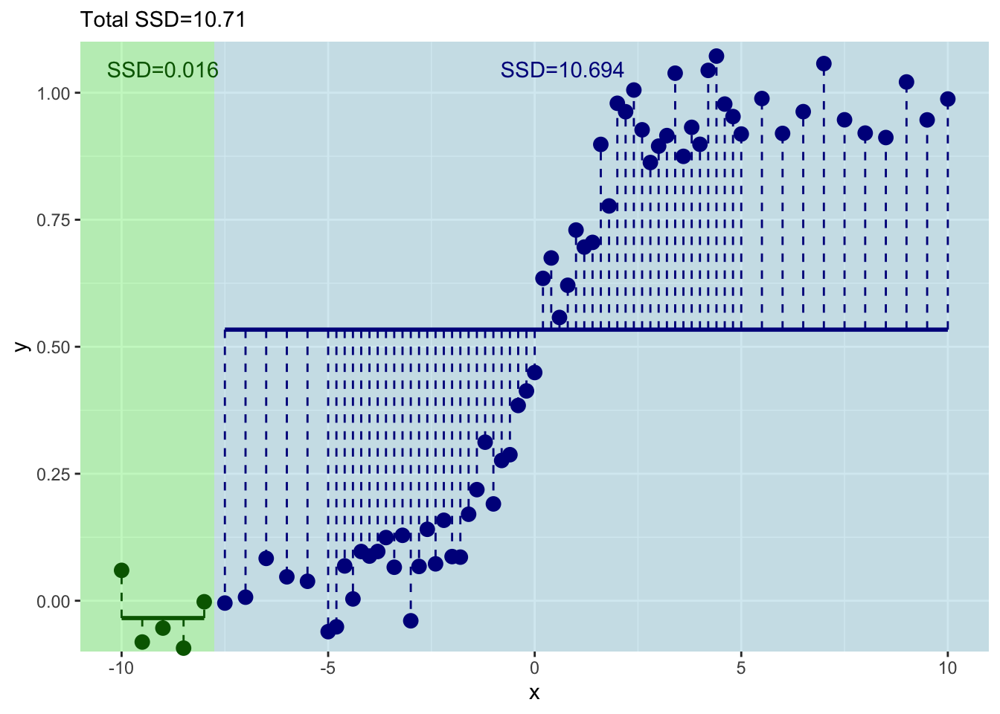
This has decreased the total sum of squares a bit.7.6.3 Iteration 3
Get the idea? Let’s do the next one with the first six values of \(x\) and \(y\).
x_left <- x[1:6]
x_right <- x[7:n]
y_left <- y[1:6]
y_right <- y[7:n]
split4plotting <- (max(x_left) + min(x_right)) / 2
ybar_left <- mean(y_left)
ybar_right <- mean(y_right)
resids_left <- sum((y_left - ybar_left)^2)
resids_right <- sum((y_right - ybar_right)^2)
p3 <- ggplot() +
geom_rect(aes(xmin=-Inf,xmax=split4plotting,
ymin=-Inf,ymax=Inf),
fill="lightgreen", alpha=0.5) +
geom_rect(aes(xmin=split4plotting,xmax=Inf,
ymin=-Inf,ymax=Inf),
fill="lightblue", alpha=0.5) +
geom_point(aes(x=x_left,y=y_left),col="darkgreen",size=3) +
geom_point(aes(x=x_right,y=y_right),col="darkblue",size=3) +
labs(x="x",y="y") +
scale_y_continuous(expand = c(0,0.1)) +
coord_cartesian(ylim=c(0,1),clip = "off")
p3 + geom_segment(aes(y=ybar_left,yend=ybar_left,
x=min(x_left),xend=max(x_left)),
color="darkgreen", size=1) +
geom_segment(aes(y=ybar_right,yend=ybar_right,
x=min(x_right),xend=max(x_right)),
color="darkblue", size=1) +
geom_segment(aes(y=ybar_left,yend=y_left,
x=x_left,xend=x_left),
color="darkgreen", linetype="dashed") +
geom_segment(aes(y=ybar_right,yend=y_right,
x=x_right,xend=x_right),
color="darkblue", linetype="dashed") +
geom_text(mapping = aes(x=mean(x_left),y=1,
label=paste("SSD=",round(resids_left,3),sep="")),
color="darkgreen",vjust=-1) +
geom_text(mapping = aes(x=mean(x_right),y=1,
label=paste("SSD=",round(resids_right,3),sep="")),
color="darkblue",vjust=-1) +
labs(subtitle = paste("Total SSD=",round(resids_left+resids_right,3),sep=""))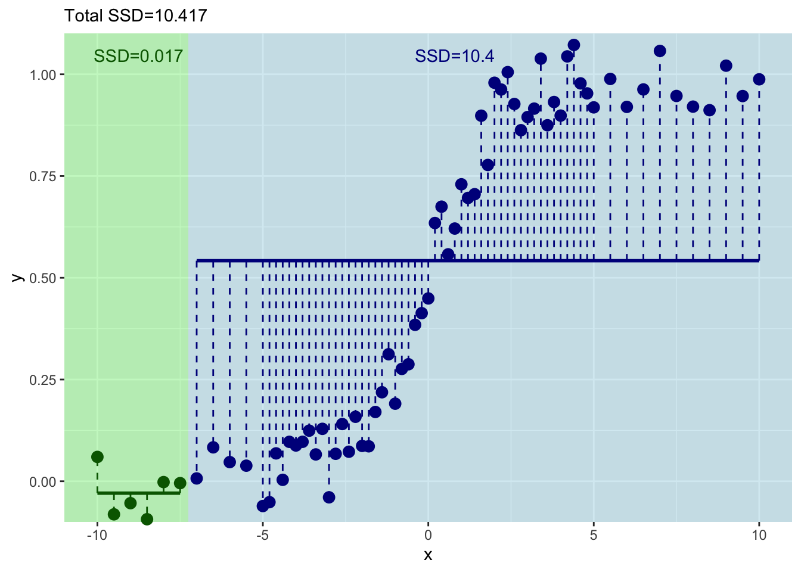
Ok. That’s even better – the total sum of squares has decreased again. But this is tedious. Let’s do this right – with a loop.
7.6.4 Loop It
Here is the same idea. But we will just keep incrementing in a loop.
runningSSD <- numeric()
runningSplit <- numeric()
for(i in 4:(n-4)){
x_left <- x[1:i]
x_right <- x[(i+1):n]
y_left <- y[1:i]
y_right <- y[(i+1):n]
split4plotting <- (max(x_left) + min(x_right)) / 2
ybar_left <- mean(y_left)
ybar_right <- mean(y_right)
resids_left <- sum((y_left - ybar_left)^2)
resids_right <- sum((y_right - ybar_right)^2)
runningSSD[i-3] <- resids_left + resids_right
runningSplit[i-3] <- split4plotting
pTmp <- ggplot() +
geom_rect(aes(xmin=-Inf,xmax=split4plotting,
ymin=-Inf,ymax=Inf),
fill="lightgreen", alpha=0.5) +
geom_rect(aes(xmin=split4plotting,xmax=Inf,
ymin=-Inf,ymax=Inf),
fill="lightblue", alpha=0.5) +
geom_point(aes(x=x_left,y=y_left),col="darkgreen",size=3) +
geom_point(aes(x=x_right,y=y_right),col="darkblue",size=3) +
labs(x="x",y="y") +
scale_y_continuous(expand = c(0,0.1)) +
coord_cartesian(ylim=c(0,1),clip = "off")
pTmp <- pTmp + geom_segment(aes(y=ybar_left,yend=ybar_left,
x=min(x_left),xend=max(x_left)),
color="darkgreen", size=1) +
geom_segment(aes(y=ybar_right,yend=ybar_right,
x=min(x_right),xend=max(x_right)),
color="darkblue", size=1) +
geom_segment(aes(y=ybar_left,yend=y_left,
x=x_left,xend=x_left),
color="darkgreen", linetype="dashed") +
geom_segment(aes(y=ybar_right,yend=y_right,
x=x_right,xend=x_right),
color="darkblue", linetype="dashed") +
geom_text(mapping = aes(x=mean(x_left),y=1,
label=paste("SSD=",round(resids_left,3),sep="")),
color="darkgreen",vjust=-1) +
geom_text(mapping = aes(x=mean(x_right),y=1,
label=paste("SSD=",round(resids_right,3),sep="")),
color="darkblue",vjust=-1) +
labs(subtitle = paste("Total SSD=",round(resids_left+resids_right,3),sep=""))
print(pTmp)
}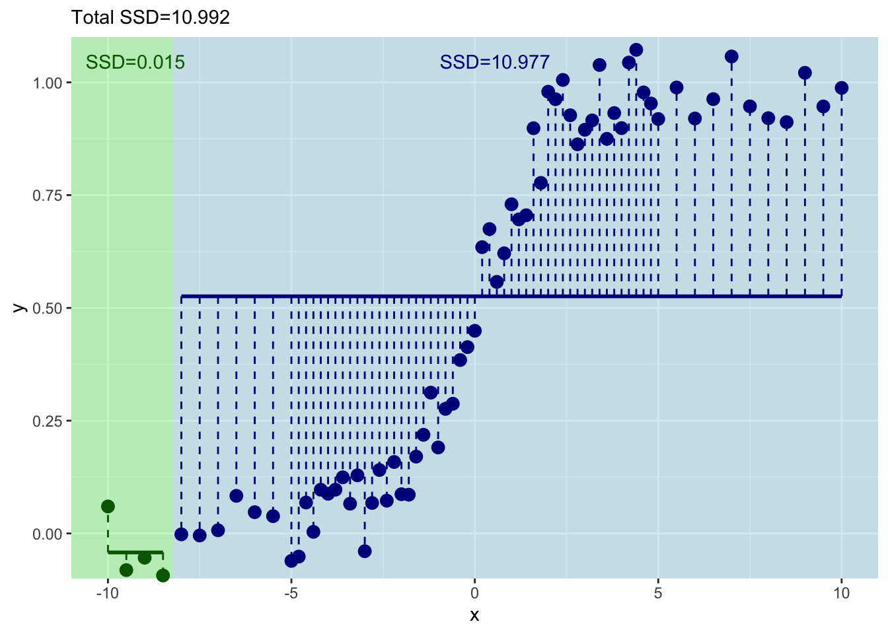
And where should we split? We pick the value of \(x\) at the minimum value of the residuals.
ggplot() +
geom_point(aes(x=runningSplit,y=runningSSD)) +
geom_line(aes(x=runningSplit,y=runningSSD)) +
labs(y="Sum of Squared Residuals",x="Threshold for Splitting on x")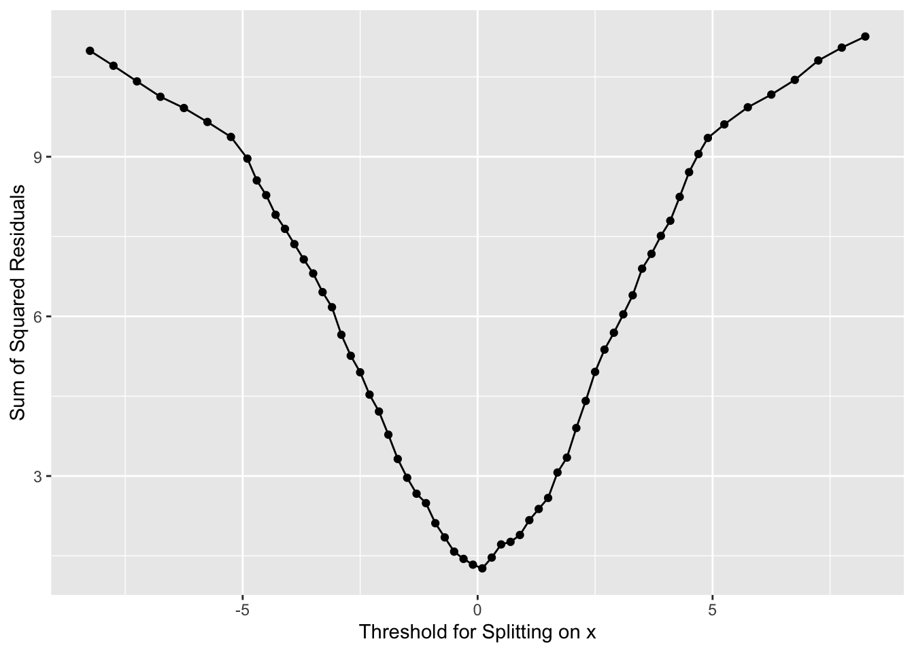
Now we have our first split of these data with \(x=0\).
7.6.5 Describing the First Split
How well have we done predicting \(y\) with this first split?
## [1] 0.1065586## [1] 0.8918577Well we have a prediction for \(y\) now in two leaves. Where \(x \leq 0\) we get \(\hat y= 0.107\) and where \(x > 0\) we get \(\hat y= 0.892\). But these are far from perfect. Indeed the standard error on these is pretty big. Here are the standard errors and the sample sizes.
## [1] 36## [1] 35## [1] 0.02286209## [1] 0.02256208Here is the tree in progress.
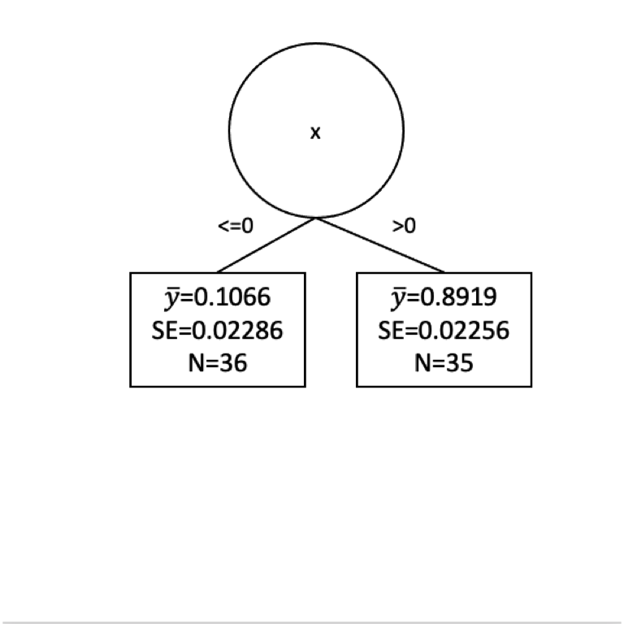
Are we done?
7.6.6 Another Split?
How can we improve that fit? Split again? I won’t go through it all again but let’s build another split for the left side of the tree.
x_leq0 <- x[x<=0]
y_leq0 <- y[x<=0]
n <- length(x_leq0)
runningSSD <- numeric()
runningSplit <- numeric()
for(i in 4:(n-4)){
x_left <- x_leq0[1:i]
x_right <- x_leq0[(i+1):n]
y_left <- y_leq0[1:i]
y_right <- y_leq0[(i+1):n]
split4plotting <- (max(x_left) + min(x_right)) / 2
ybar_left <- mean(y_left)
ybar_right <- mean(y_right)
resids_left <- sum((y_left - ybar_left)^2)
resids_right <- sum((y_right - ybar_right)^2)
runningSSD[i-3] <- resids_left + resids_right
runningSplit[i-3] <- split4plotting
pTmp <- ggplot() +
geom_rect(aes(xmin=-Inf,xmax=split4plotting,
ymin=-Inf,ymax=Inf),
fill="lightgreen", alpha=0.5) +
geom_rect(aes(xmin=split4plotting,xmax=Inf,
ymin=-Inf,ymax=Inf),
fill="lightblue", alpha=0.5) +
geom_point(aes(x=x_left,y=y_left),col="darkgreen",size=3) +
geom_point(aes(x=x_right,y=y_right),col="darkblue",size=3) +
labs(x="x",y="y") +
scale_y_continuous(expand = c(0,0.1)) +
coord_cartesian(ylim=c(0,1),clip = "off")
pTmp <- pTmp + geom_segment(aes(y=ybar_left,yend=ybar_left,
x=min(x_left),xend=max(x_left)),
color="darkgreen", size=1) +
geom_segment(aes(y=ybar_right,yend=ybar_right,
x=min(x_right),xend=max(x_right)),
color="darkblue", size=1) +
geom_segment(aes(y=ybar_left,yend=y_left,
x=x_left,xend=x_left),
color="darkgreen", linetype="dashed") +
geom_segment(aes(y=ybar_right,yend=y_right,
x=x_right,xend=x_right),
color="darkblue", linetype="dashed") +
geom_text(mapping = aes(x=mean(x_left),y=1,
label=paste("SSD=",round(resids_left,3),sep="")),
color="darkgreen",vjust=-1) +
geom_text(mapping = aes(x=mean(x_right),y=1,
label=paste("SSD=",round(resids_right,3),sep="")),
color="darkblue",vjust=-1) +
labs(subtitle = paste("Total SSD=",round(resids_left+resids_right,3),sep=""))
print(pTmp)
}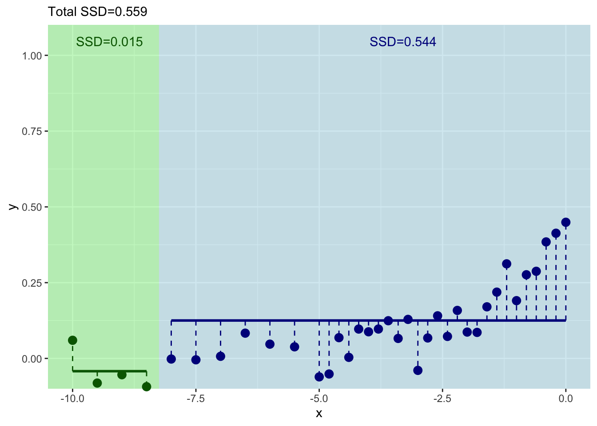
And where should we split this time? We still pick \(x\) at the minimum value of of the residuals.
ggplot() +
geom_point(aes(x=runningSplit,y=runningSSD)) +
geom_line(aes(x=runningSplit,y=runningSSD)) +
labs(y="Sum of Squared Residuals",x="Threshold for Splitting on x")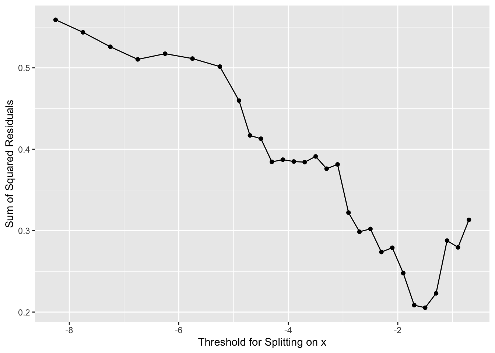
## [1] -1.5Now we have our next split at \(x = -1.5\). This would give us new predictions for \(y\). So we follow our new rules for \(y\) when \(x \leq -1.5\) and when \(-1.5 < x \leq 0\). We get predictions (\(\hat y\)) as:
## [1] 0.04658348## [1] 0.3164714The standard errors and sample size on those as:
## [1] 28## [1] 8## [1] 0.01389169## [1] 0.03258364Here is a plot of the tree so far.
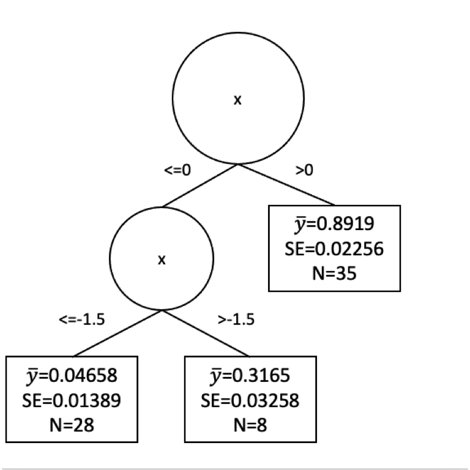
7.6.7 Are We Done Now?
Would we stop our tree growing now? Or keep going? We face the same difficulty here as we did with decision trees. How much splitting is enough? We could go on until every observation was in its own leaf. But that would certainly be overfit.
The pruning of regression trees is more complicated than I want to get into with a toy example but you can watch a great video here that explains the cost complexity penalty method for pruning. The basic idea is that we can uses tuning parameter that balances minimizing the sum of the squared residuals with the number of leaves in a tree to get a balance of signal to noise in the final tree. This happens behind the scenes for you implementations like rpart.
Let’s look at some real data.
7.7 Regression Tree Example: Lead Levels in St Louis
I’m going to show data from 106 census tracts in St. Louis, Missouri and we are going to use rpart to run a regression model. Here is the source of the data. It stems from a very sobering series of reports from Reuters on lead levels in children that you can find here
For each census tract in these data, we have the percentage of the population that identifies as white or Black in the American Community Survey data. The data also shows the percent of the population that is in poverty and the percentage of the population that is under the age of 18 and in poverty (kids in poverty). With these data, there is also a variable named pctTestsElevatedPb. This is the percentage of tests performed that showed elevated lead in the blood of children. The Reuters article will tell you more about it. So a number like 0.12 means that 12% of the tests showed elevated lead. The data were collected over 2010-2015. Most of these tracts have about 1000 tests that goes into the pctTestsElevatedPb column. I fear the data are robust.
Here we go.
## Rows: 106 Columns: 5
## ── Column specification ────────────────────────────────────────────────────────
## Delimiter: ","
## dbl (5): pctWhite, pctBlack, pctPoverty, pctPovertyu18, pctTestsElevatedPb
##
## ℹ Use `spec()` to retrieve the full column specification for this data.
## ℹ Specify the column types or set `show_col_types = FALSE` to quiet this message.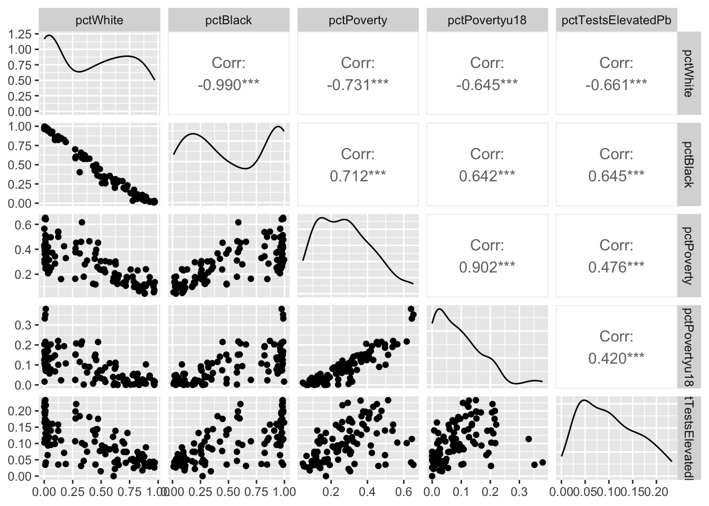
We are going to model elevated Pb levels as a function of race and poverty in each tract. E.g., pctTestsElevatedPb~pctWhite+pctBlack+pctPoverty+pctPovertyu18. Before we do that, let’s break the data up into testing and training data using a random sampling of the rows.
With that done. Let’s build a regression tree using rpart and plot the tree with the visTree function.
Let’s spend some time looking at the splits. It’s sobering indeed.
Now, these data are bound to be noisy. Let’s look at the skill of the rpart model using the testing data and plot the observed vs predicted data.
obs <- test$pctTestsElevatedPb
pred <- predict(rp1,test)
ggplot(mapping = aes(x=obs,y=pred)) + geom_point() +
geom_smooth(method="lm") +
labs(x="Observed",y="Predicted")## `geom_smooth()` using formula = 'y ~ x'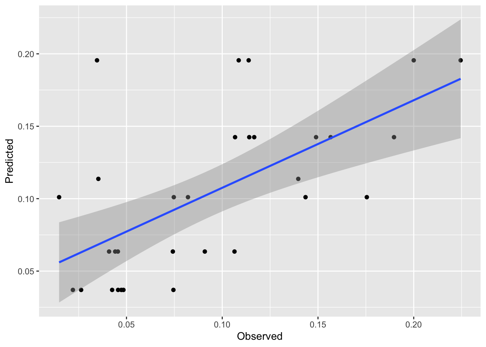
## [1] 0.3905506## [1] 0.03592384First, that’s pretty good skill for out of sample estimates. These kinds of data are notoriously messy. And the plot is interesting. It’s also pretty weird looking with the predicted date in stripes on the y axis. But it makes sense when we think about it. There are only a few terminal nodes on the tree, so only a few possible different predictions of lead. It’s amazing that it explains so much of the variance.
Look back at the terminal nodes on the tree plot. All those points shunted into one predicted value. It’d be cool if we could do something with all those residuals in each terminal node, huh?
7.8 Model Tree Example: Lead Levels in St Louis
Well, we can investigate those residuals. That’s what model trees are all about. They are basically regression trees like rpart fits but they then try to clean up the end nodes by running a linear model on the data in that node. The book is quite good on this idea – see page 212. The idea is that any non-linear relationships have been beaten out of the system by the regression tree approach and we should be able to improve model performance with an additional bit of linear modeling (OLS) on the points in each terminal node. So, kind of annoyingly, regression trees don’t do regression but model trees do. Let’s investigate using cubist just like the book does.
The cubist splitting and pruning criteria are different than rpart but the concept is the same. The model will perform a split, then run a linear model on the data in each terminal node. The algorithm grows and prunes until the model is neither too small nor too big. There is a little more info in the text (see page 212) but the under-the-hood details are beyond the scope of what we want to cover here.
##
## Call:
## cubist.default(x = dat[, -5], y = dat$pctTestsElevatedPb)
##
## Number of samples: 106
## Number of predictors: 4
##
## Number of committees: 1
## Number of rules: 2This is interesting. There are only two rules (one split) but let’s look at the rules. Note the linear model at the end of each rule.
##
## Cubist [Release 2.07 GPL Edition]
## ---------------------------------
##
## Target attribute `outcome'
##
## Read 106 cases (5 attributes) from undefined.data
##
## Model:
##
## Rule 1: [63 cases, mean 0.07798, range 0 to 0.2209, est err 0.02630]
##
## if
## pctBlack <= 0.6236004
## then
## outcome = 0.10745 + 0.469 pctPovertyu18 - 0.084 pctWhite
##
## Rule 2: [43 cases, mean 0.13629, range 0.0312 to 0.2328, est err 0.04255]
##
## if
## pctBlack > 0.6236004
## then
## outcome = 0.19097 - 0.431 pctWhite - 0.226 pctPovertyu18
##
##
## Evaluation on training data (106 cases):
##
## Average |error| 0.03513
## Relative |error| 0.70
## Correlation coefficient 0.68
##
##
## Attribute usage:
## Conds Model
##
## 100% pctBlack
## 100% pctWhite
## 100% pctPovertyu18We’ve divided the data using similar criteria to rpart. But we have a good model still.
Let’s see how it fits. We can predict the model just like we can with rpart.
obs <- test$pctTestsElevatedPb
pred <- predict(mt1,test[,-5])
ggplot(mapping=aes(x=obs,y=pred)) + geom_point() +
geom_smooth(method="lm") +
labs(x="Observed",y="Predicted")## `geom_smooth()` using formula = 'y ~ x'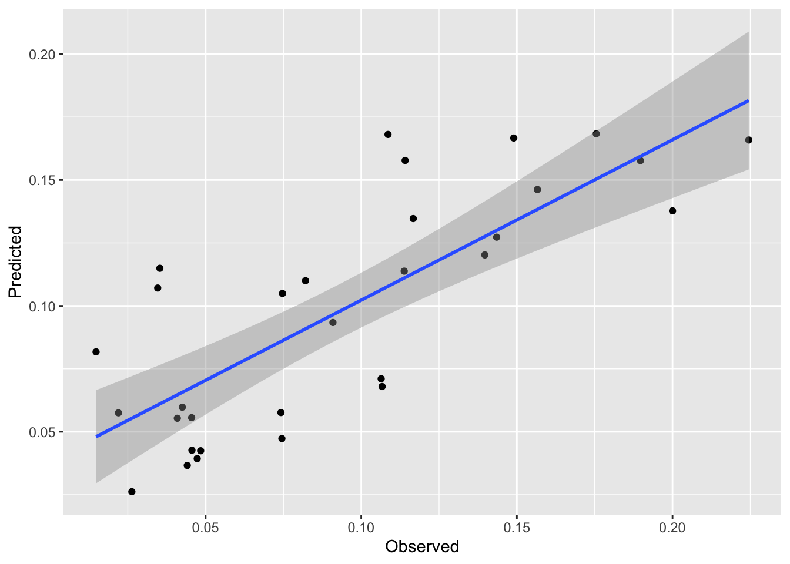
## [1] 0.6144374## [1] 0.02723345We see a nice improvement in skill on the withheld data with this approach. And it is a subtle approach. My issue with regression trees is that they basically take a continuous variable and turn the response into a category (albeit one with residuals). This approach combines the best part of brute force partitioning with the elegance of regression modeling.
7.9 Your Work
I have some data on tree growth in the tropics. The data are daily over the course of a year. The file GrowthTempWater.csv has four columns. The first is the date, the second is cambial growth, the third is average daily temperature and the fourth is total plant available water in soil. The last three are all unitless and range from zero to one. Lower numbers mean less growth, lower temperature, less available water. Conversely, higher numbers mean faster growth, higher temps, and more soil water. Having these be relative numbers will keep you from getting hung up on units (e.g., grams of carbon per day, degrees C, or cubic cm of water).
## Rows: 365 Columns: 4
## ── Column specification ────────────────────────────────────────────────────────
## Delimiter: ","
## chr (1): Date
## dbl (3): Growth, Temp, SoilWater
##
## ℹ Use `spec()` to retrieve the full column specification for this data.
## ℹ Specify the column types or set `show_col_types = FALSE` to quiet this message.datLong <- dat %>% pivot_longer(cols=-1)
ggplot(datLong, aes(x=as.Date(Date),y=value)) +
geom_line() +
labs(y="Unitless") +
theme_minimal() +
facet_wrap(~name,ncol=1)## Warning: Removed 663 rows containing missing values or values outside the scale range
## (`geom_line()`).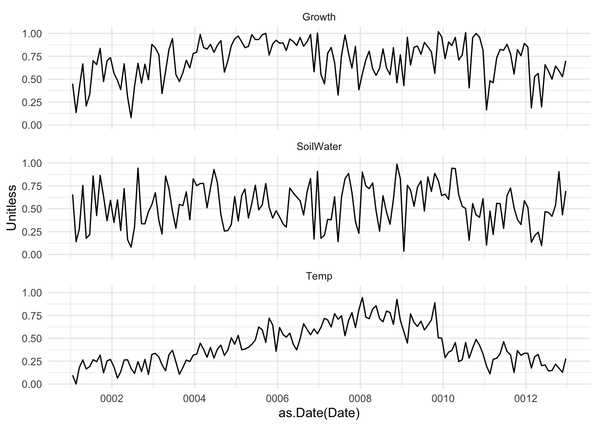
Here is what I want you to do.
Do some data visualization and run some correlations. What is the relationship between growth, temperature, and soil water from this analysis?
Model growth as function of temperature and available water with a linear model. E.g.,
lm(Growth~Temp+SoilWater,data=dat). Describe that model. Is it a good fit?Fit the same model with
rpart. Describe the splits. Do some plotting withvisTree. Is it a good fit? Does is make logical sense?Give
cubista whirl. Plotting is more difficult of course but describe the rules. Is it a good fit?Speculate on the differences between the models and quantify their skill with R\(^2\) and MAE.
Explain, in words, the what’s going on here. What makes these plants grow?
Two more things. First, you’ll want to be doing responsible testing and training of course. Make sure to shuffle the rows, the data are currently organized by Date and the Date shouldn’t play a role in prediction. Second, all three of these models (lm, rpart, cubist) can all be run in caret using train if you want to explore that for cross validation in lieu of doing train/test splits. However be warned that train with methods rpart and cubist will default to tuning the hyperparamters that are part of those methods (e.g., committees and neighbors for cubist). We are going to discuss what tuning means in a few weeks so don’t worry about it at the moment.